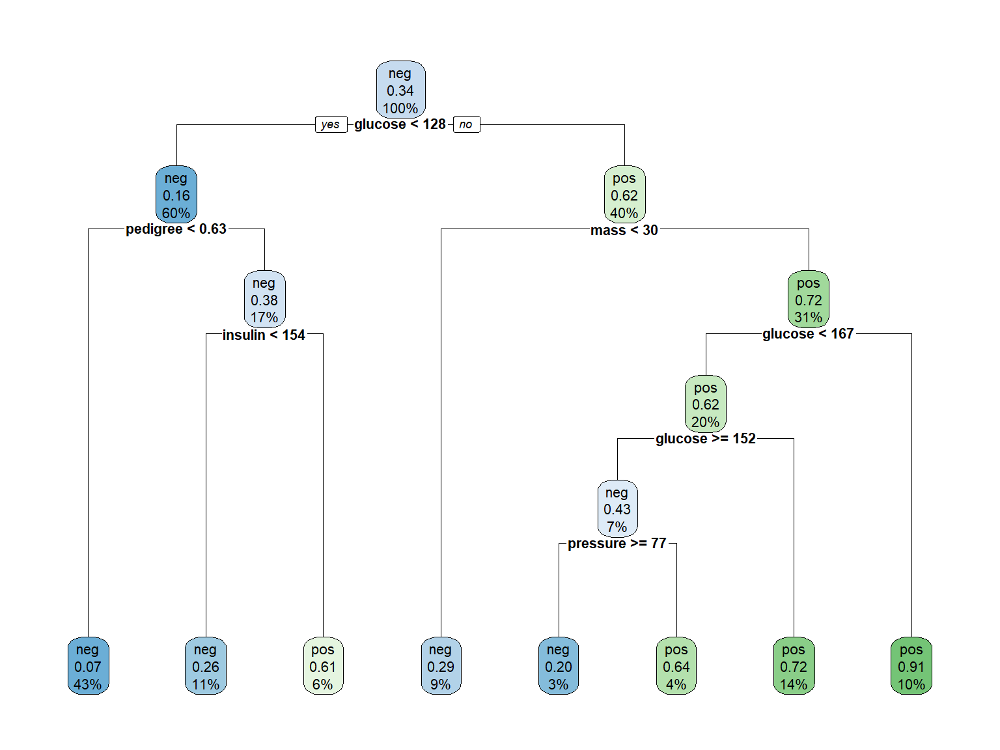

Code
data("PimaIndiansDiabetes2", package = "mlbench")
# Eliminar valores NA si los hay
PimaIndiansDiabetes2 <- na.omit(PimaIndiansDiabetes2)PIMA Indians Example
data("PimaIndiansDiabetes2", package = "mlbench")
# Eliminar valores NA si los hay
PimaIndiansDiabetes2 <- na.omit(PimaIndiansDiabetes2)dplyr::glimpse(PimaIndiansDiabetes2)Rows: 392
Columns: 9
$ pregnant <dbl> 1, 0, 3, 2, 1, 5, 0, 1, 1, 3, 11, 10, 1, 13, 3, 3, 4, 4, 3, 9…
$ glucose <dbl> 89, 137, 78, 197, 189, 166, 118, 103, 115, 126, 143, 125, 97,…
$ pressure <dbl> 66, 40, 50, 70, 60, 72, 84, 30, 70, 88, 94, 70, 66, 82, 76, 5…
$ triceps <dbl> 23, 35, 32, 45, 23, 19, 47, 38, 30, 41, 33, 26, 15, 19, 36, 1…
$ insulin <dbl> 94, 168, 88, 543, 846, 175, 230, 83, 96, 235, 146, 115, 140, …
$ mass <dbl> 28.1, 43.1, 31.0, 30.5, 30.1, 25.8, 45.8, 43.3, 34.6, 39.3, 3…
$ pedigree <dbl> 0.167, 2.288, 0.248, 0.158, 0.398, 0.587, 0.551, 0.183, 0.529…
$ age <dbl> 21, 33, 26, 53, 59, 51, 31, 33, 32, 27, 51, 41, 22, 57, 28, 2…
$ diabetes <fct> neg, pos, pos, pos, pos, pos, pos, neg, pos, neg, pos, pos, n…skim(PimaIndiansDiabetes2)| Name | PimaIndiansDiabetes2 |
| Number of rows | 392 |
| Number of columns | 9 |
| _______________________ | |
| Column type frequency: | |
| factor | 1 |
| numeric | 8 |
| ________________________ | |
| Group variables | None |
Variable type: factor
| skim_variable | n_missing | complete_rate | ordered | n_unique | top_counts |
|---|---|---|---|---|---|
| diabetes | 0 | 1 | FALSE | 2 | neg: 262, pos: 130 |
Variable type: numeric
| skim_variable | n_missing | complete_rate | mean | sd | p0 | p25 | p50 | p75 | p100 | hist |
|---|---|---|---|---|---|---|---|---|---|---|
| pregnant | 0 | 1 | 3.30 | 3.21 | 0.00 | 1.00 | 2.00 | 5.00 | 17.00 | ▇▂▂▁▁ |
| glucose | 0 | 1 | 122.63 | 30.86 | 56.00 | 99.00 | 119.00 | 143.00 | 198.00 | ▂▇▇▃▂ |
| pressure | 0 | 1 | 70.66 | 12.50 | 24.00 | 62.00 | 70.00 | 78.00 | 110.00 | ▁▂▇▆▁ |
| triceps | 0 | 1 | 29.15 | 10.52 | 7.00 | 21.00 | 29.00 | 37.00 | 63.00 | ▅▇▇▃▁ |
| insulin | 0 | 1 | 156.06 | 118.84 | 14.00 | 76.75 | 125.50 | 190.00 | 846.00 | ▇▂▁▁▁ |
| mass | 0 | 1 | 33.09 | 7.03 | 18.20 | 28.40 | 33.20 | 37.10 | 67.10 | ▃▇▃▁▁ |
| pedigree | 0 | 1 | 0.52 | 0.35 | 0.09 | 0.27 | 0.45 | 0.69 | 2.42 | ▇▃▁▁▁ |
| age | 0 | 1 | 30.86 | 10.20 | 21.00 | 23.00 | 27.00 | 36.00 | 81.00 | ▇▂▁▁▁ |
# Tabla de frecuencias para la variable objetivo
table(PimaIndiansDiabetes2$diabetes)
neg pos
262 130 set.seed(123)
split <- initial_split(PimaIndiansDiabetes2, prop = 0.8)
train.data <- training(split)
test.data <- testing(split)model <- rpart(diabetes ~ ., data = train.data, control = rpart.control(cp = 0.01))rpart.plot(model, cex = 0.7)
# Predicción en test
test.pred <- predict(model, test.data, type = "class")
accuracy <- mean(test.pred == test.data$diabetes)
print(paste("Test Accuracy:", round(accuracy, 3)))[1] "Test Accuracy: 0.772"